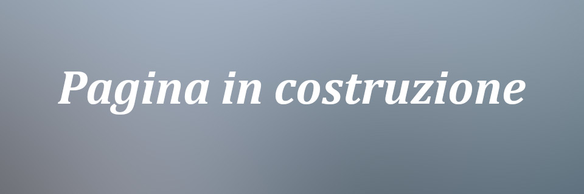

Protesi Mobile
Realizziamo protesi rimovibili totali anche dotate di sistemi di ancoraggio su impianti o radici dentali, protesi rimovibili parziali con scheletrati in lega di cromo-cobalto e protesi provvisorie sia totali che parziali.
Soddisfiamo la richiesta di protesi provvisorie preestrattive in pochi giorni lavorativi.
La scelta delle file denti e dei polimeri per la base viene fatta sempre con criteri che danno priorità alla qualità del prodotto.
Per qualsiasi altra richiesta e/o approfondimento non esitate a contattarci.
Protesi Fissa
Siamo preparati per qualsiasi tipo di richiesta in protesi fissa.
Produciamo direttamente nel nostro laboratorio manufatti in ossido di zirconio, ceramica integrale, metallo ceramica, metallo composito ed altro.
In ossido di zirconio realiziamo sia strutture monolitiche che stratificate con ceramica dentale. Usiamo solo materie prime di alta qualità certificata.
Per la ceramica integrale usiamo disilicato di litio, con il quale produciamo piccoli ponti, corone singole, faccette ed intarsi.
La metallo ceramica non è sparita completamente dalla nostra produzione. In base alla richiesta del professionista vengono realizzate strutture metalliche in metallo nobile, seminobile e vile. Per la realizzazione di strutture in lasermelting ci avvaliamo della collaborazione delle più importanti realtà nazionali (Sistema Sinergia Nobil Metal e New Ancorvis). Si possono realizzare strutture su impianti prodotte con la tecnica del lasermelting con la ripresa in fresatura della connesione.
I materiali compositi possono essere usati per la produzione di corone e ponti in metallo-resina ma anche e soprattutto per intarsi che danno dei risultati molto incoraggianti a tutti i clinici che decidono di adottarne la tecnica.
Per qualsiasi altra richiesta e/o approfondimento non esitate a contattarci.
Protesi Combinata
La produzione di protesi combinate avviene completamente nel nostro laboratorio. Realiziamo interamente tutta la catena produttiva, sia la parte fissa che lo scheletrato che la finitura della parte rimovibile.
Realizziamo anche protesi su corone conometriche.
Il fatto di produrre tutto il flusso lavorativo nella stessa struttura (cosa non scontata quando si parla di protesi combinata) garantisce risultati di maggior qualità e tempistiche di lavoro più flessibili
Per qualsiasi altra richiesta e/o approfondimento non esitate a contattarci.
Implantoprotesi
Trattiamo qualsiasi lavoro con la massima professionalità per offrire al cliente un prodotto di alta qualità, dalla più semplice corona singola alla riabilitazione protesica più complessa. Tutto, dai materiali alle tecniche di lavorazione, viene selezionato con cura e competenza.
La protesi implantare rappresenta la più grande varietà di possibili lavorazioni del settore quindi diventa difficile elencarle tutte. Siamo in grado di soddisfare le richieste più varie. Si possono eseguire lavori in zirconia con connettori in titanio, protesi in metallo ceramica, protesi rimovibili, protesi con mesostrutture, Toronto Bridge, all on four, all on six, ponti e corone avvitate, ponti e corone cementate, ponti e corone con microvite linguale per il fissaggio su monconi implantari, e molto altro
Per qualsiasi altra richiesta e/o approfondimento non esitate a contattarci.
Casi Clinici in implantoprotesi
Anche le corone singole nei settori posteriori meritano l'attenzione massima ai particolari. Massima precisione nel passaggio corona-connettore. Attenzione alla corrispondenza con il colore fornito dal clinico. Anche dove non venisse richiesta una personalizzazione estetica particolare il risultato cromatico risulterà essere comunque di qualità. In questo caso è stato scelto di costruire la protesi in Zirconia monolitica. Il materiale usato è "Katana Kuraray Noritake". La connessione con la piattaforma implantare è in titanio, cementata alla corona con cemento "Panavia V5".
Work in progress
